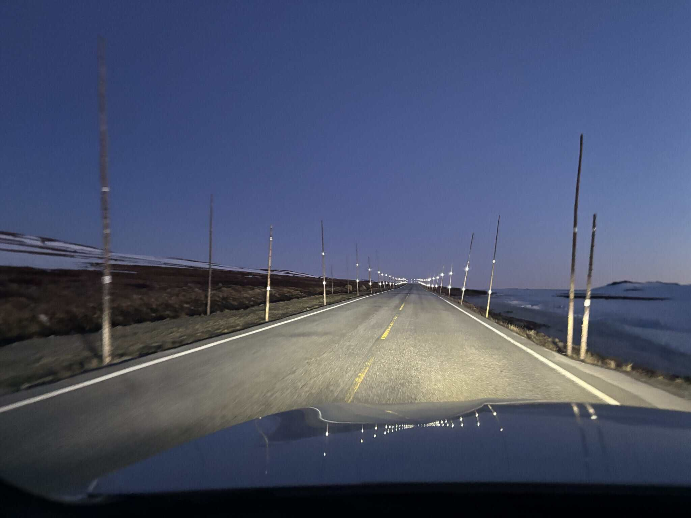
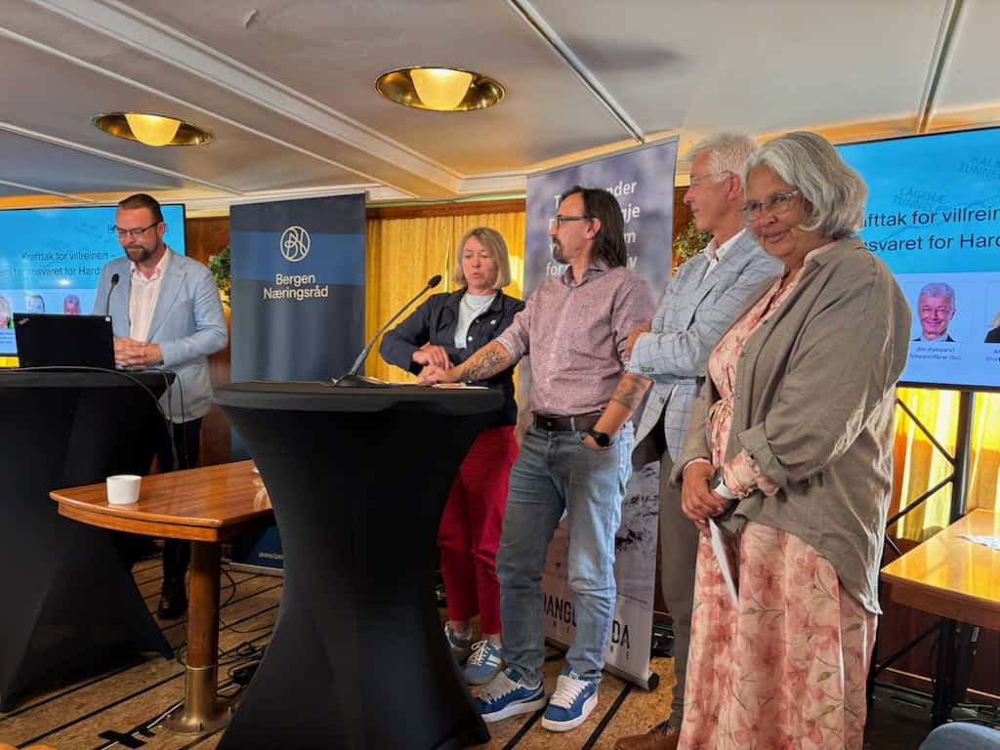
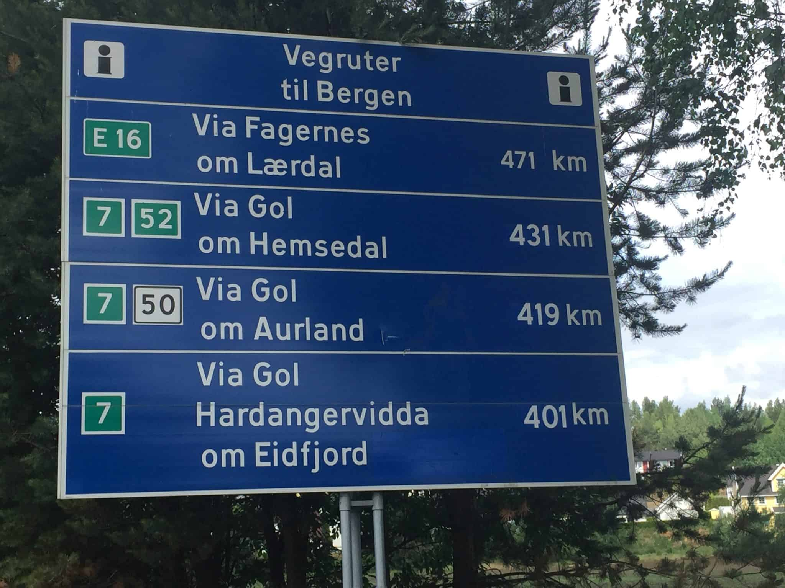
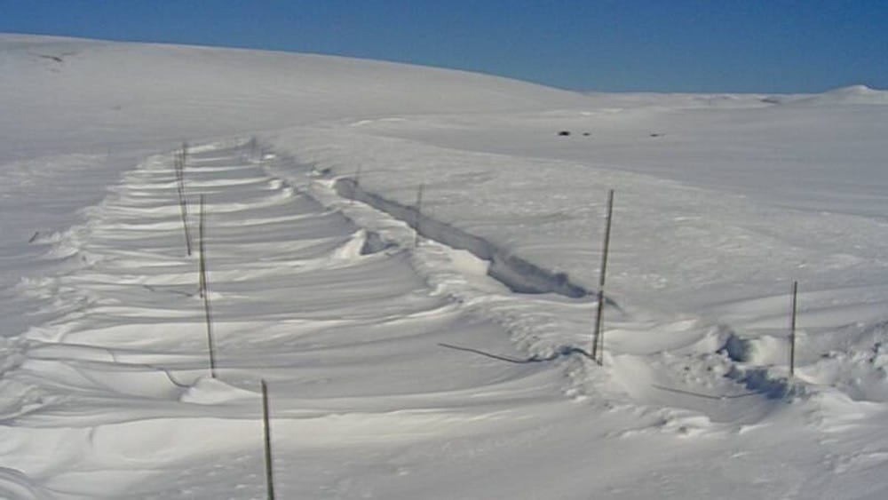

Bygg/anlegg
Hardangerviddatunnelene
MENY Toggle Menu Hardangerviddatunnelene har som hovedformål å etablere sikker helårsvei over Hardangervidda (Rv 7) gjennom bygging av tunneler. Aktuelle saker RV 7 Hardangervidda er ein hovedveg aust-vest og må prioriterast i NTP 2028-2040.
Om HARDANGERVIDDATUNNELENE
MENY Toggle Menu Hardangerviddatunnelene har som hovedformål å etablere sikker helårsvei over Hardangervidda (Rv 7) gjennom bygging av tunneler. Aktuelle saker RV 7 Hardangervidda er ein hovedveg aust-vest og må prioriterast i NTP 2028-2040.
Bilete frå Villreindebatten: Harald Victor Hove (debattleiar), Anne-Mari Planke (DNT), Timo Knoch (Ordførar Eidfjord), Jon Askeland (Fylkesordførar Vestland), Anne Hagenborg (Stortingets Energi- og miljøkomite). Hardangerviddatunnlene as hadde to vellukka arrangement i Arendalsuka.
Hardangerviddatunnlene as er også i 2026 representerte i Arendalsuka. Sammen med Vestlandet er vi tilstades på Vestlandsbåten «MS Sandnes».

Dette gjør vi
Skip to content Aktuelt
Leiv Vambheim Dagleg leiar
Petter Rukke Styreleiar Vara: Inger Brit Vindegg
Kari Lægreid Nestleiar Vara: Anett Viveli
Jørund Li Styremedlem Vara: Oddvar Svendsen
Timo Knoch Styremedlem Vara: Bjørn Lægreid
Slik jobber vi
- 01
Ta kontakt
Ring eller send skjemaet, og fortell kort hva du trenger.
- 02
Vi avtaler befaring
Vi ser på forholdene og snakker gjennom hva som skal gjøres.
- 03
Du får skriftlig tilbud
Du vet hva jobben koster før den starter.
Mer om det vi gjør
Nasjonal transportplan (NTP) er ein plan for prioritering av framtidig samferdselsutbygging med 12 års perspektiv, fordelt i 2 bolkar på 6 år , kalla første periode og andre periode. Inneverande plan er for 2025-2036.
Transport og kommunikasonskomiteen på Stortinget skal behandla forslag om på starta planlegging av tunnelar på Hardangervidda den 27.januar og saka skal i Stortinget 05.februar 2026. Denne saka har full støtte frå alle som har uttala seg i Tiltaksplanane for villreinstamma på Hardanegervidda , men dessverre så vil interessene rundt E 134 stoppa planar for tunnelar…
Fra arbeidet vårt


Ta kontakt
HARDANGERVIDDATUNNELENE AS
Be om tilbud